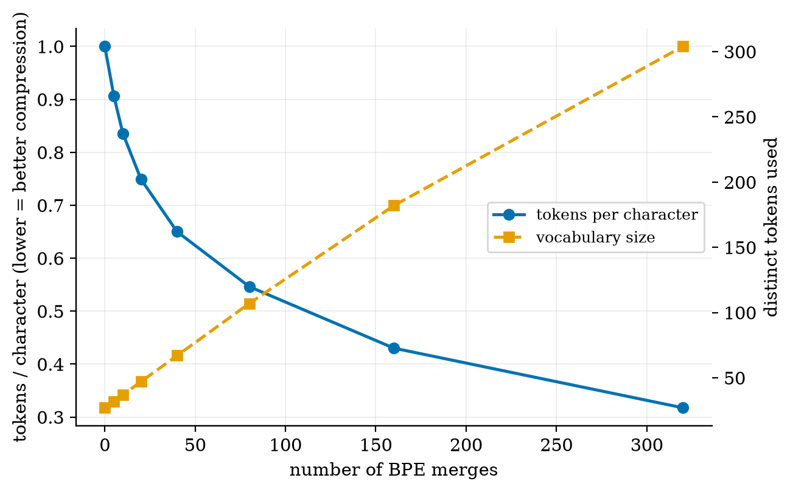
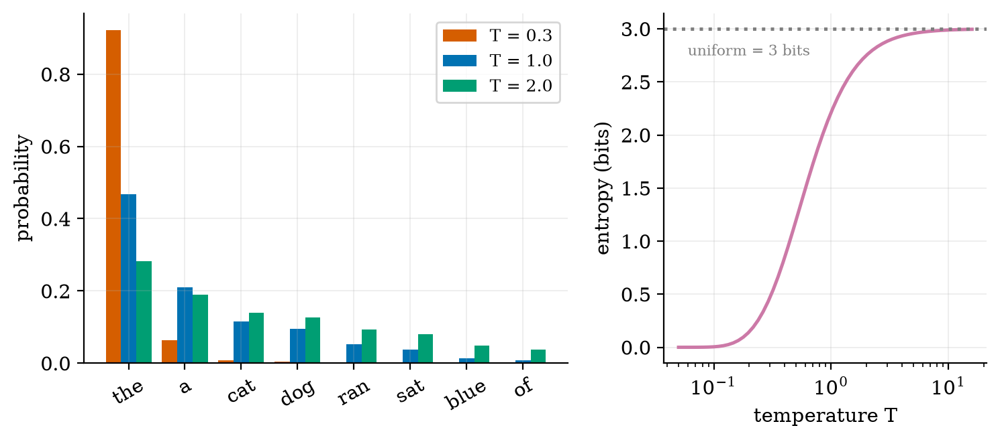
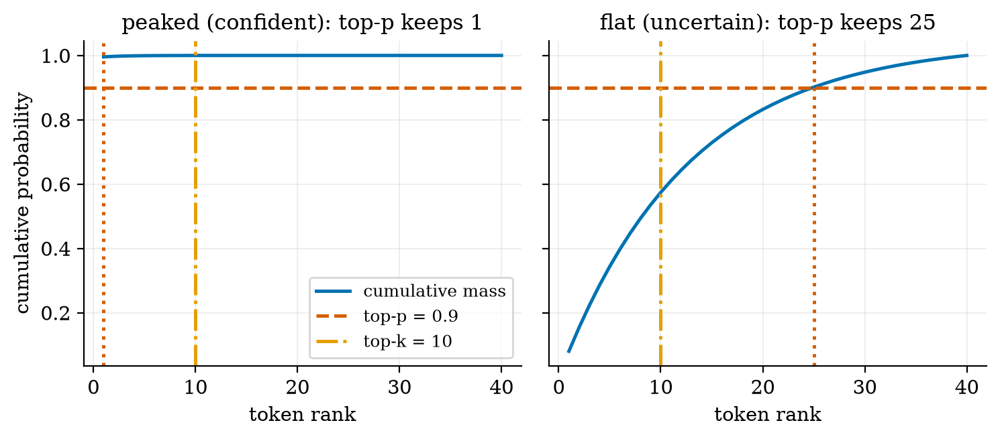
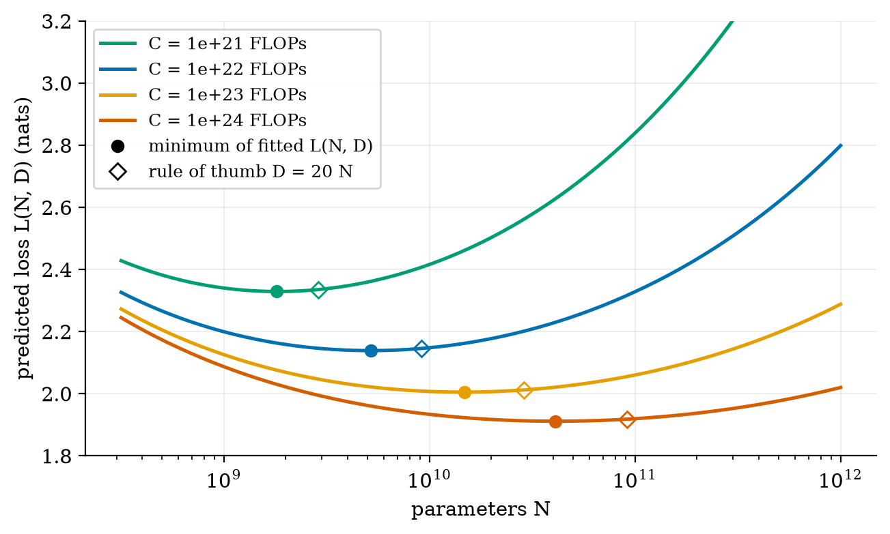
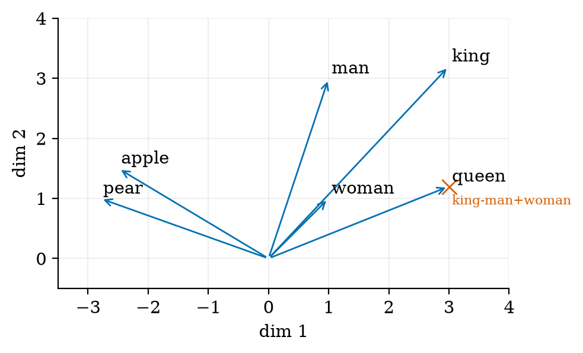

explain an LLM as one repeated operation: predict a probability for every possible next token, and compute its loss and perplexity by hand;
train a byte-pair-encoding (BPE) tokenizer on any text and say why subwords beat words and characters;
turn logits into a token with greedy, temperature, top-k, top-p and beam decoding and predict what each knob does;
estimate a model's parameter count and training compute, and read a scaling-law curve;
run and modify the NumPy code that produced every figure.
The big picture
Imagine the suggestion bar on a phone keyboard, scaled up until the suggestions are paragraphs. Two ideas do all the work.
1. Text is cut into tokens. The model never sees letters or words, only integer ids of word pieces. Each id is looked up in a table of learned vectors (the embedding).
2. The model outputs odds; a separate rule decides. The network returns a probability for every token in its vocabulary. Decoding (greedy, temperature, top-k, top-p, beam) picks one. The same model can sound careful or creative depending only on that rule.
Writing a long answer is therefore a loop: predict, choose, append, predict again. That is why answers appear one token at a time and why an early bad choice cannot be taken back.
The loss. Training pushes up the probability the model gave to the true next token. The average of −ln(that probability) is the cross-entropy loss; its exponential is the perplexity, the number of equally likely choices the model is effectively torn between.
Key equations
Chain rule: one next-token predictor defines the probability of a whole sentence.
Softmax with temperature T. T→0 is greedy, T→∞ is uniform.
Cross-entropy loss and perplexity.
The gradient at the logits is just (predicted distribution) minus (one-hot truth).
Parameters of a decoder-only Transformer, and training FLOPs for D tokens.
Scaling law fitted by Hoffmann et al. 2022 (E=1.69, A=406.4, B=410.7, α=0.34, β=0.28).
Figures

More BPE merges: fewer tokens per character (blue) but a bigger vocabulary (orange). Zero merges is character-level.

Left: the same logits at three temperatures. Right: entropy rises from 0 bits to the uniform 3 bits as T grows.

Top-p adapts: it keeps 1 token when the model is confident and 25 when it is not. Top-k keeps 10 in both cases.

IsoFLOP curves from the fitted scaling law: each budget has one best model size, and the minimum is flat.

Toy 2-D embeddings built by hand: similar words point the same way (cosine), and king − man + woman lands on queen.
Try it in the playground
Each link opens the widget with good starting settings. Every option has a plain-English label and a one-line help text.
BPE tokenizer stepper
Watch the merge table build up and see how your own words are split.
Everything is plain NumPy. After downloading the All code (.zip) and unzipping:
pip install -r requirements.txt
python codes/llm/tokens_decoding/tokens_decoding.py # trains BPE on a toy corpus and prints each merge
python codes/llm/tokens_decoding/tests/test_tokens_decoding.py # 6 tests, prints: ok
python figures/fig02_temperature.py # reproduces Figure 2 (needs the folder layout of the zip)
The heart of decoding is four lines: softmax(z, T), then top_k_filter, then top_p_filter, then draw one token. The module README explains each function.
An honest note on scaling laws. Minimising the fitted formula does not give the famous “20 tokens per parameter”: it gives 51 at 1021 FLOPs rising to 100 at 1024. The paper itself reports this (its approach 3), while its other two approaches give a constant ratio. The PDF (Section 3.5) explains the difference.
Self-check
Answer in your head first, then click to reveal.
A model gives the true next token probability 0.25 at every step. What is its perplexity?
PPL = exp(−ln 0.25) = 4: it is as unsure as a fair 4-sided die.
What happens to the sampled token as temperature goes to 0? To infinity?
To 0: the top token gets all the probability (greedy). To infinity: every token becomes equally likely.
In BPE, which pair is merged at each step, and are the merges ordered?
The most frequent adjacent pair, weighted by word frequency. Yes: encoding replays the merges in the order they were learned.
Why can top-p be better than top-k?
Top-k keeps a fixed number of tokens. Top-p keeps a fixed amount of probability, so it keeps few tokens when the model is sure and many when it is not.
Why does an LLM sometimes miscount the letters in a word?
It sees a few subword tokens, not letters. This is a property of tokenization.
Estimate the parameters of a model with L = 12 blocks, width d = 768, vocabulary 50,257.
12·12·768² + 50,257·768 ≈ 84.9M + 38.6M = 123.5M (the GPT-2 small scale).